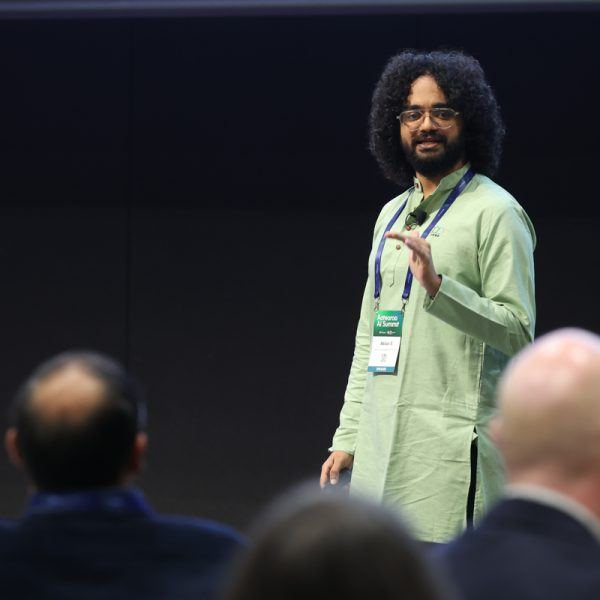

Conferences · AI
Aotearoa AI Summit 2027
- Dates
- Dates TBA
- Location
- Auckland, New Zealand
- Format
- In-person
- Category
- AI
- Industry
- Artificial intelligence
- Organiser
- AI Forum New Zealand
- Official website
- https://www.aotearoaai.nz/
About
Topics: AI, AI adoption, responsible AI.
No organiser attendance figure found on official pages (24 Nov 2026). Ranked by an estimated size tier 'small' (our judgement from format, venue and scale, not an official number).